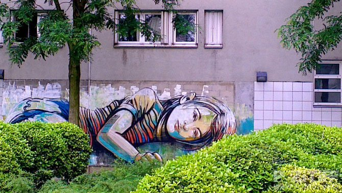
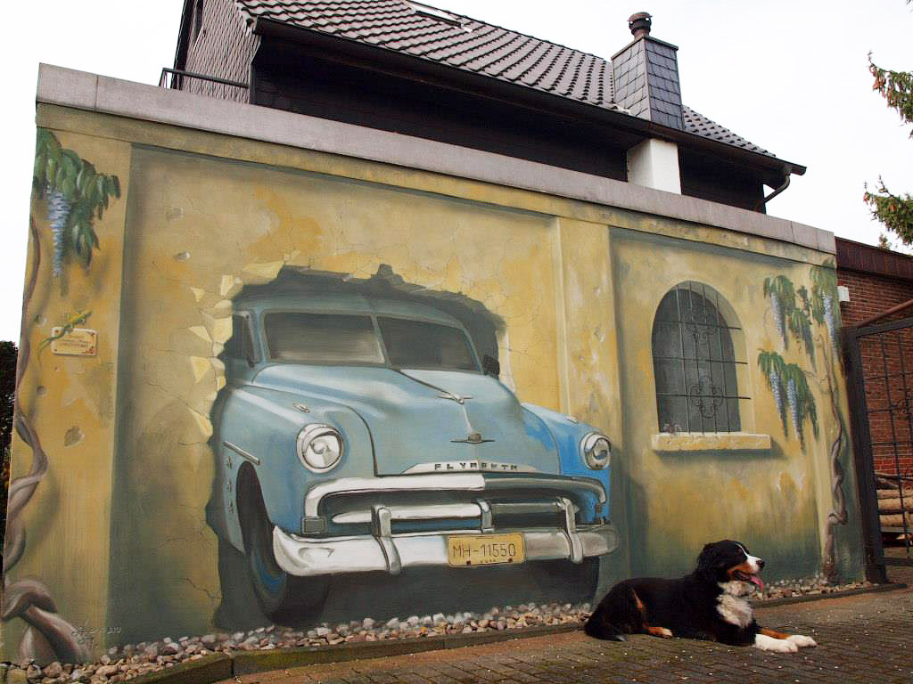

Стріт-арт
Стріт-арт - вуличне мистецтво
До стріт-арту належать постери (некомерційні), трафарети, різні скульптурні інсталяції і т. п. У вуличному мистецтві важлива кожна деталь, дрібниця, тінь, колір, лінія. Художник створює свій стилізований логотип - "унікальний знак" і зображує його на ділянках міського ландшафту. Найголовніше в стріт-арт - не привласнити територію, а втягнути глядача в діалог і показати різну сюжетну програму.
"Стріт-арт має колосальну іміджеву силу: люди сприймають незалежне, неконтрольоване, не узгоджене з владою висловлювання", – каже Йосип Бакштейн, директор російського Інституту проблем сучасного мистецтва. Як у Росії, так і в Україні він вважається одним з головних фахівців зі стріт-арту.
Аналітики пов'язують масові прояви такого протестного мистецтва із ситуацією, яка зріє в суспільстві: українці, що розчарувалися в своїх політичних кумирах, шукають нових лідерів і нових форм протесту. Стріт-арт – саме те, що треба.
|  |  |
Масштабно, помітно і водночас абсолютно незалежно – так характеризує вуличне мистецтво психолог Алевтина Шевченко. "Потужність соціальної складової художніх робіт визначається гострою соціальною ситуацією в Україні", – зазначає експерт.
Втім, українські вуличні художники далеко не суцільні анархісти і революціонери, і суто декоративна місія їм не чужа: яскраві малюнки, яким би не був їхній зміст, в будь-якому випадку пожвавлюють сіру атмосферу міст, міркують вони.
У Києві майже неможливо займатися масштабним стріт-артом з багатьох причин – чиновницький бюрократизм під час отримання дозволів, відсутність зацікавлених спонсорів.
Хоча українська влада робить перші несміливі кроки назустріч передовому культурному явищу – за останній рік фестивалі стріт-арту пройшли за підтримки мерів і губернаторів у Дніпропетровську, Сумах і Харкові, але, за визнанням самих художників, абсолютної свободи самовираження вони не отримали.
"Якщо тобі влада дає риштування, машину і фарбу, щоб ти малював, то вона, як правило, дуже чітко і добре знає, що саме ти повинен намалювати", – упевнений харківський художник Гамлет Зіньковський.
Готовність суспільства сприйняти стріт-арт як альтернативний погляд на світ, не вписуючи його в певні рамки, безпосередньо залежить від розвиненості громадянського суспільства.
Водночас чим жорсткіші рамки держави, тим наполегливіше вуличне мистецтво прагне їх зруйнувати. "Український стріт-арт набагато скромніший, ніж європейський і американський, він більш налаштований у бік соціальної полеміки, а не індивідуальної, чи естетичної.
«Художник стріт-арту - справжній партизан», - афористично резюмує український живописець Тіберій Сільваші, маючи на увазі, що стріт-художник веде напівлегальну діяльність. Правда, і він, і самі вуличні художники визнають, що не кожну настінну напис, а їх останнім часом з'являється все більше, варто відносити до стріт-арту. Побачити хороший стріт - все одно що знайти в лісі білий гриб...
Стріт-арт розширює простір у головах людей, в сприйнятті ними власних міст і тих міст, в які вони потрапляють, а також внутрішній простір і простір смаку.
Вперед Вгору